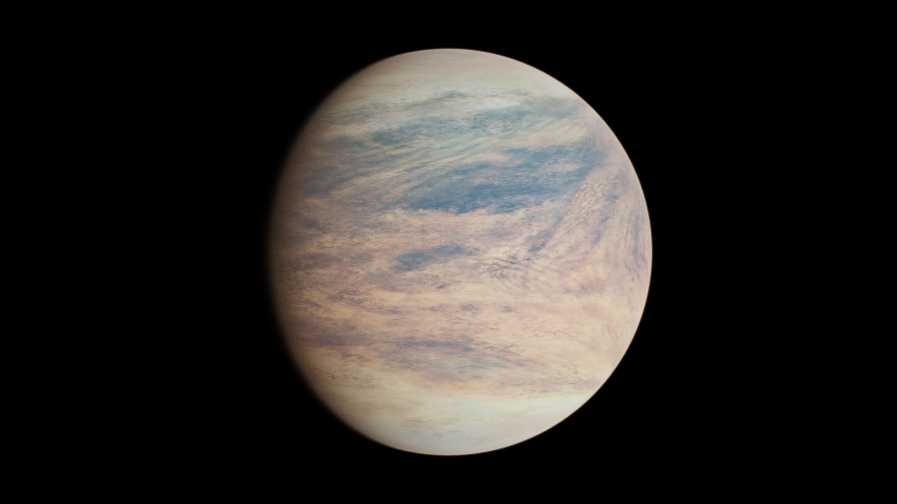

Venus
A continuación de Mercurio encontramos a Venus. Es
el que más se parece a la Tierra. Está cubierto de nubes muy espesas que reflejan la luz solar, de modo que por
la noche se ve brillante y podemos distinguirlo a simple vista.
Su nombre es en honor a Venus, diosa romana del amor.
vuelta al Indice